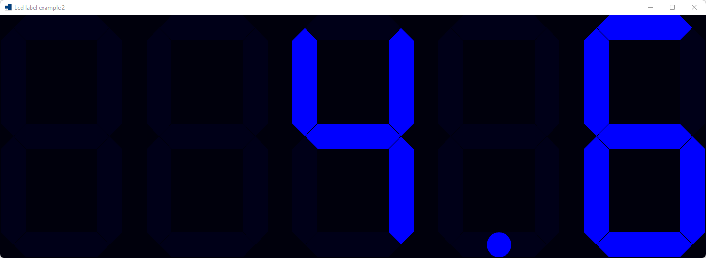
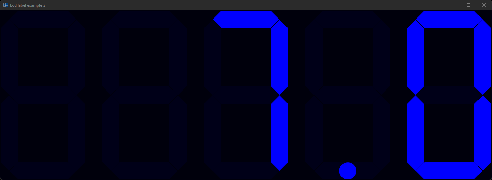
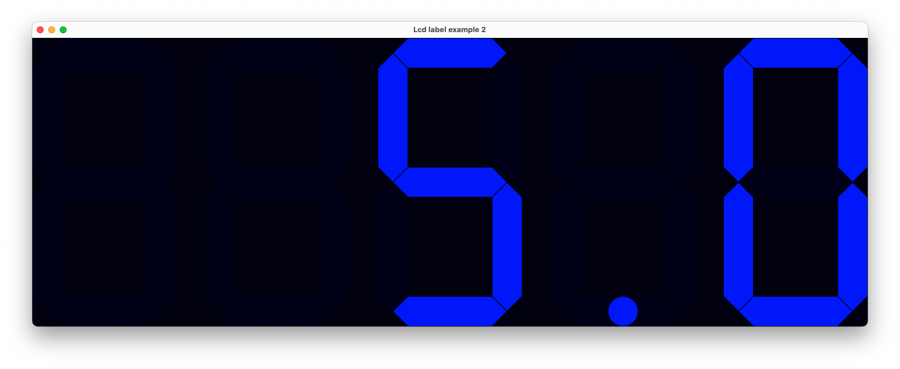
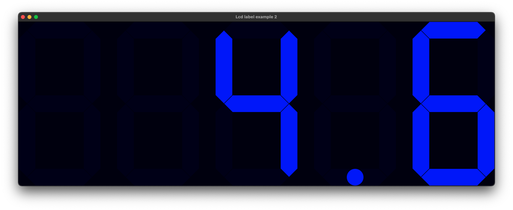
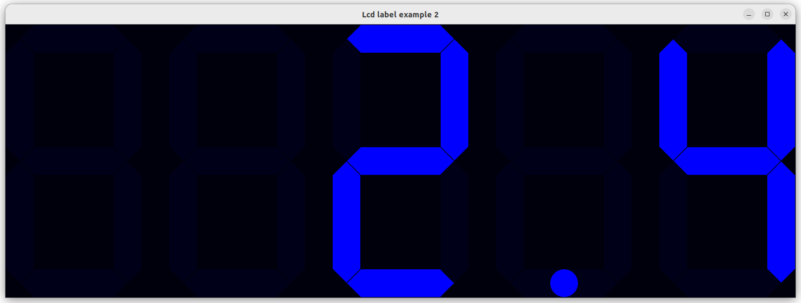
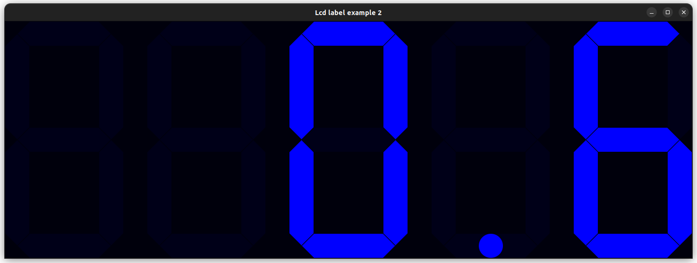

|
xtd
0.2.0
|
Loading...
Searching...
No Matches
lcd_label2.cpp
demonstrates how to use xtd::forms::lcd_label control.
- Windows
- 

- macOS
- 

- Gnome
- 

#define DEBUG
#include <xtd/diagnostics/debug>
#include <xtd/diagnostics/stopwatch>
#include <xtd/drawing/color_converter>
#include <xtd/forms/application>
#include <xtd/forms/form>
#include <xtd/forms/lcd_label>
using namespace xtd;
using namespace xtd::diagnostics;
using namespace xtd::drawing;
using namespace xtd::forms;
auto main() -> int {
stopwatch chrono;
form form_main;
form_main.start_position(form_start_position::center_screen);
form_main.auto_size_mode(forms::auto_size_mode::grow_and_shrink);
form_main.client_size({1456, 503});
debug::write_line(ustring::format("{,5:F1}", chrono.elapsed_milliseconds() / 1000.0));
};
if (control::mouse_buttons() == mouse_buttons::left) {
} else {
}
};
application::run(form_main);
}
Provides a set of methods and properties that you can use to accurately measure elapsed time.
Definition stopwatch.h:34
void reset() noexcept
Stops time interval measurement and resets the elapsed time to zero.
void start() noexcept
Starts, or resumes, measuring elapsed time for an interval.
int64 elapsed_milliseconds() const noexcept
Gets the total elapsed time measured by the current instance, in milliseconds.
void restart() noexcept
stops time interval measurement, resets the elapsed time to zero, and starts measuring elapsed time.
virtual const xtd::ustring & text() const noexcept
Gets the text associated with this control.
virtual drawing::color fore_color() const noexcept
Gets the foreground color of the control.
virtual const drawing::size & client_size() const noexcept
Gets the height and width of the client area of the control.
virtual bool double_buffered() const noexcept
Gets a value indicating whether this control should redraw its surface using a secondary buffer to re...
event< control, mouse_event_handler > mouse_down
Occurs when the mouse pointer is over the xtd::forms::control and a mouse button is pressed.
Definition control.h:1697
virtual dock_style dock() const noexcept
Gets which control borders are docked to its parent control and determines how a control is resized w...
virtual drawing::color back_color() const noexcept
Gets the background color for the control.
virtual std::optional< control_ref > parent() const noexcept
Gets the parent container of the control.
Represents a window or dialog box that makes up an application's user interface.
Definition form.h:52
virtual forms::auto_size_mode auto_size_mode() const noexcept
Gets the mode by which the form automatically resizes itself.
virtual form_start_position start_position() const noexcept
Gets the starting position of the form at run time.
Implements a timer that raises an event at user-defined intervals. This timer is optimized for use in...
Definition timer.h:36
virtual time_span interval() const noexcept
Gets the time, in milliseconds, before the tick event is raised relative to the last occurrence of th...
event< timer, event_handler > tick
Occurs when the specified timer interval has elapsed and the timer is enabled.
Definition timer.h:128
The xtd::diagnostics namespace provides classes that allow you to interact with system processes,...
Definition assert_dialog_result.h:10
The xtd::drawing namespace provides access to GDI+ basic graphics functionality. More advanced functi...
Definition actions_system_images.h:11
The xtd::forms namespace contains classes for creating Windows-based applications that take full adva...
Definition xtd_about_box.h:12
The xtd namespace contains all fundamental classes to access Hardware, Os, System,...
Definition xtd_about_box.h:10
Generated on Sun May 19 2024 22:44:15 for xtd by Gammasoft. All rights reserved.